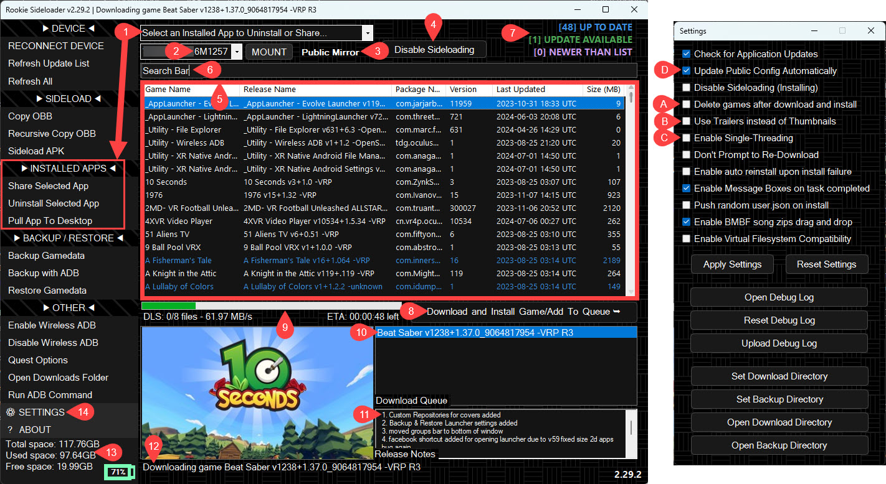
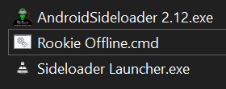
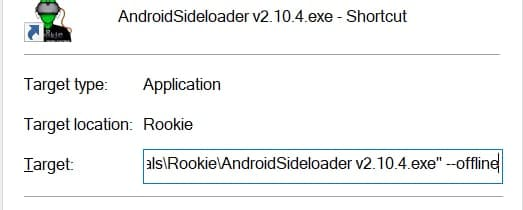

Guide
How to: Use Rookie Sideloader
This app will automatically download and install Quest games. If it's not working, it's usually anti-virus.
Quick Setup
- Extract Rookie to a folder like
C:\RSL\Rookie. Do not use protected folders. - Exclude the folder from your anti-virus scanning.
- Run
AndroidSideloader.exe.

Key Features

- Auto-upload features for game donations.
- Gamelist with Update Available indicators.
- Download Queue and progress tracking.
- Settings for Single-Threading and Virtual Filesystem compatibility.
Offline Mode

